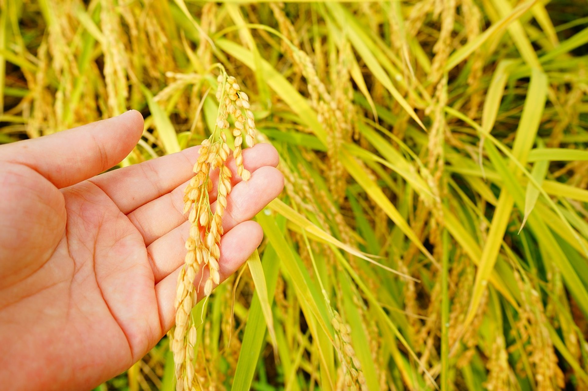
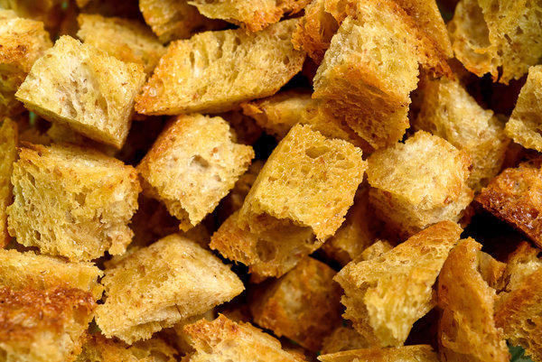
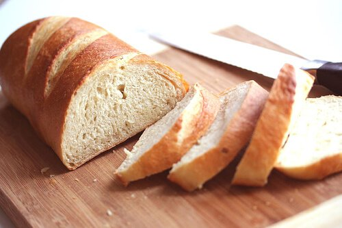

Our Grains
At SimpleSalad, we believe you deserve only the finest grains in your bowls.
This is why we are comitted to making every salad bowl with naturally grown
organic grains, giving you the quality that you deserve.

All our rice is carefully and organically grown by our producers
in the Red River Valley of East Arkansas, to guarantee you get only
the highest quality rice in every bowl.
To make sure every bowl is perfect for you, we only offer 100% organic
noodles, freshly made in-store with the finest non-GMO wheat from
Woodson County, Kansas.


Made from our homemade organic bread, our croutons are seasoned
and baked to perfection, to ensure the perfect crunch in
every bowl.
Don't want any grains inside your bowl? Try our side bread, made
from the finest non-GMO wheat from Kansas. We guarantee you won't
regret your order.
